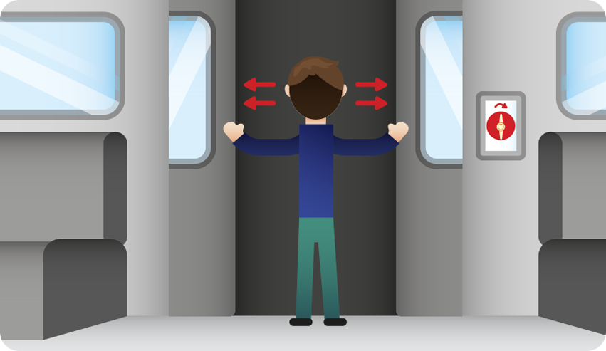

연기가 차오르거나 매캐한 냄새가 나고 눈이나 코가 따끔거린다면 객차 어디선가 불이 난 것입니다.
지하철 화재는 좁고 막힌 공간에 연기가 빨리 차 질식할 위험이 큽니다. 입과 코를 손수건, 스카프, 옷소매 등으로 막고 즉시 대피해야 합니다.
객실 양 끝에 있는 비상버튼을 눌러 승무원에게 화재 발생을 알리고, 눈에 보이는 곳에서 불이 났다면 소화기로 불을 끕니다.
대피 방송이 나오고 열차가 멈추는 것이 정상입니다. 지하철이 멈췄지만 출입문이 열리지 않을 때는 수동으로 문을 열 수 있습니다.
출입문 옆 벽이나 좌석 아래에 있는 비상개방 커버를 열고 핸들을 돌립니다. 3~10초간 공기 빠지는 소리가 멈추기를 기다렸다가 손으로 문을 양 옆으로 밀어 엽니다.

문이 열리지 않으면 비상망치나 소화기로 창문을 깹니다. 플랫폼의 스크린도어는 빨간색 바를 밀면 열립니다.
플랫폼이 아닌 곳에서 지하철이 멈춘 경우, 열차의 진행방향을 따라 이동합니다.
대도시의 지하철 역간은 짧고, 뒤따라 오는 열차에 의한 충돌이 있을 수 있으므로 반대 방향으로 걸어가는 것은 위험합니다.
선로에 올라가지 말고, 터널 중간에 비상 출구가 나오지 않으면 다음 역의 플랫폼에서 빠져 나옵니다.
지하철 화재나 폭발 사고시에는 입과 코를 가려 연기를 들이마시는 것을 최소화하면서 즉시 탈출해 지상 출구로 나가야 합니다.